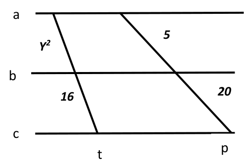

En la figura, las rectas \(a\), \(b\) y \(c\) son todas paralelas entre sí y \(t\) y \(p\) son dos transversales. Calculá el valor de \(y\).

Para resolver este ejercicio y los próximos, hace falta aprender los temas vistos en este video.